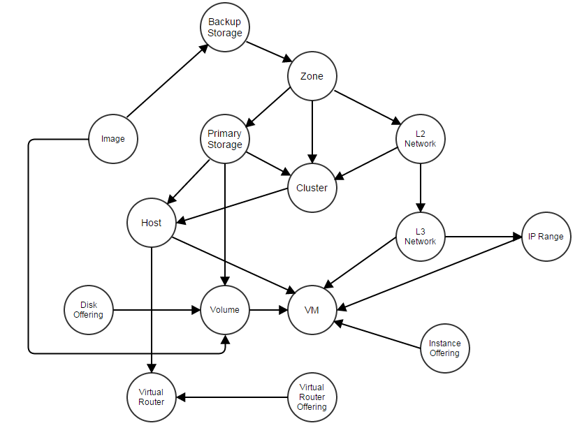
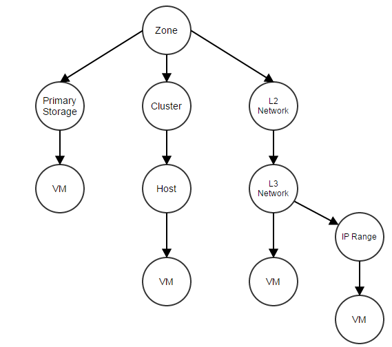

The Cascade Framework
Resources in a cloud have relations to each other. An operation to one resource may usually set off a chain effect to others; for example, when deleting a cluster, it makes sense to delete all hosts belonging to that cluster and to stop all VMs running on those hosts. Traditional IaaS software either hard code chain effects or simply deny those operations, for example, prohibiting users from deleting a cluster that has VM running. ZStack offers a cascade framework that can spread an operation from one resource to all related resources. Resources can choose to join the cascade framework by implementing a simple extension point, which decouples the framework from resources' business logic.
The motivation
Resources in a cloud depend to each other more or less; for example, a host is a child resource of a cluster, a primary storage is a sibling resource to a cluster, and an L3 network is a descendant resource of a zone. Relationships among resources can be described as a directed graph:

We show major ZStack resources in the above graph; though different IaaS software may use different terms, it aims to give you a rough idea. As implied by the graph, when an operation is taken to a resource, not only the target resource but also the relevant resources will be affected; for example, when deleting a zone, it would be ideal that resources belonging to the zone such as clusters, hosts, primary storage, L2 networks and so on will be deleted as well. In order to handle this, the IaaS software must cater to the need of cascading operations.
The problem
Most IaaS software take little account of cascading operations; they either hard code business logic, for example, explicitly deleting all resources belonging to an account that is going to be deleted, or simply deny this kind of operations, for example, greeting you an error message "there is still a VM using an IP in this IP range" when you are trying to delete an IP range. Both ways can bring a lot of troubles. For hard coding, it makes the software inflexible for adding new resources, because you have to modify existing code to add cascade operations, for instance, modifying the code of deleting account to delete the new resources when an account is being deleted. For the error message which is totally lack of responsibility, users either have to do boring work, for example, deleting 100 VMs manually before deleting an IP range, or have to ruin everything then start from scratch, for example, re-deploying the entire cloud.
Avoiding misoperation is not an excuse: Someone may claim that denying cascade deletion is deliberate, because users may make misoperation that can bring disaster consequences; for example, mistakenly deleting a zone and causing a loss of all VMs. However, such claim is a false excuse and is making the decision for users. Could you imagine you have to delete 10,000 VMs manually just in order to delete a zone, because the software think you may do something wrong, so it forces you to show confirmation by repeating a boring task 10,000 times? A good software should provide choices to users, and let them make the decision. In our example, the IaaS software should warn users that there are still 10,000 VMs running before proceeding to the final deleting; but once users acknowledge that's what they want, the software should just do it.
Cascade Framework
ZStack solves this problem by a cascade framework; as the name implies, the cascade framework allows an operation to be cascaded
from one resource to others. In order to decouple the architecture, the cascade framework is made as an individual component
that resources can join the framework at will. To join the framework, all a resource needs to do is implementing an extension point
CascadeExtensionPoint (in our example AbstractAsyncCascadeExtension is a class implementing CascadeExtensionPoint):
class VmCascadeExtension extends AbstractAsyncCascadeExtension {
@Override
public void asyncCascade(CascadeAction action, Completion completion) {
if (/* this is from deleting Primary Storage*/) {
/* delete VMs that have root volumes on the primary storage*/
} else if (/*this is from deleting L3 Network*/) {
/* stop VMs that have nics on the L3 network, and remove those nics */
} else if (/* this is from deleting IP range*/) {
/* stop VMs that have nics whose IP is in the IP range */
} else if (/* this is from deleting host*/) {
/* stop VMs that run on the host */
}
completion.success();
}
@Override
public List<String> getEdgeNames() {
return Arrays.asList(
PrimaryStorageVO.class.getSimpleName(),
L3NetworkVO.class.getSimpleName(),
IpRangeVO.class.getSimpleName(),
HostVO.class.getSimpleName()
);
}
@Override
public String getCascadeResourceName() {
return VmInstanceVO.class.getSimpleName();
}
@Override
public CascadeAction createActionForChildResource(CascadeAction action) {
return convertContextToVmRelatedContext(action);
}
}The getCascadeResourceName() returns the name of the resource(VmInstance); getEdgeNames() returns a list of resource names that are directly
related to the resource, PrimaryStorage, L3Network, IpRange, and Host in our example; so if and when a deleting operation is taken to
those edge resources or their upstream resources(e.g. zone), the operation will be cascaded to extensions that declare them in getEdgeNames()
method. The cascade extension could take actions in asyncCascade(), and retrieve necessary information such as the operation code(e.g. delete),
the root issuer(e.g. zone, will explain soon) and the parent issuer(e.g host, will explain soon) from which the operation stems,
and the operation context(e.g. which host is being deleted). As the relationship of resources is a directed graph that may have circular paths, the
cascade framework will flatten the graph to a tree, and break circular paths into branches. For example, the operation of deleting zone will
result in below tree (a part):

Note: As you can see, the operation of deleting zone will be cascaded multiple times to the VM's cascade extension; that is deliberate because cascade extension usually relies on the parent issuer to decide what actions to take; in this example, the parent issuers of VM are Primary Storage, Host, L3Network and IP range; however, for different parent issuers, the extension may take different actions; for example, if the parent issuer is primary storage and the operation code is
delete, the extension will destroy all VMs that have root volume on that primary storage; but if the parent issuer is host, the extension will only stop VMs on that host, because those VMs can be started on other hosts later. Given ZStack doesn't have conflicting cascade operations, for example, there won't be an operation that causes VM to start from a path A but stop from a path B, it's not a problem to cascade an operation to an extension multiple times from different paths.
When cascading an operation, the framework starts with a root issuer on which the operation is applied; in our above example of deleting
zone, zone is the root issuer; then the framework will traverse the tree from the root issuer and call extensions' createActionForChildResource() method
to create contexts for each extension on each path; once all contexts are created, the framework will traverse the tree again but
from leaf nodes to the root and call asyncCascade() of each extension; an extension can rely on the parent issuer which are resource names declared in
the getEdgeNames() method to decide what actions to take; for example, stopping VMs if the parent issuer is host, and deleting VMs if the parent issuer is primary storage.

Guaranteed by the two stages traverse, an operation(e.g. deleting) will be only applied on the root issuer after all downstream resources have
done some proper actions; for example, a zone will be deleted only after all descendant resources being deleted.
As not all operations need to be cascaded, a resource can call CascadeFacade.asyncCascade() when it needs.
Summary
In this article, we demonstrated ZStack's cascade framework, which is a powerful tool to spread operations without hard coding. ZStack uses it in many ways, except the example we cited in the text, operations like detaching primary storage(which will stop all VMs in the cluster to be detached), detaching L2 network(which will stop all VMs in the cluster to be detached) are all implemented in this manner. With its help, administrators can quickly try out different cloud deployments without worrying about inconveniences; you can just delete a part of your deployment and re-create a new one, without redeploying the entire cloud just because you have created many VMs on an incorrectly designed L2 network (for example).